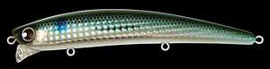
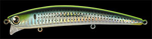
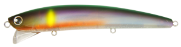
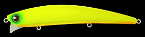

フランキー120
（FRANKY 120）
フランキー120（FRANKY 120）はLONGIN（ロンジン）のシャローミノーです。
流れの強い河川から干潟などの広いシャローエリアを、効率よく探るためのサーチベイトとして開発されたシャローレンジ専用ミノー。水面直下〜60cmのレンジを、引き重りなく・強いアピールで泳がせられるのが最大の魅力です。
※フランキー120は現在廃盤のモデルです。新品は店頭や通販の在庫限りとなるため、見つけたら早めの入手がオススメです。

画像出典:ロンジン公式HP
スペック
- メーカー
- LONGIN（ロンジン）
- タイプ
- シャローミノー（フローティング）
- 全長
- 120mm
- 自重
- 20g
- 潜行深度
- 水面直下〜60cm
- 交換推奨フック
- #6
- ターゲット
- シーバス
- 価格
- 2,420円（税込）※定価。現在は廃盤のため在庫限り
▼今すぐチェック

フランキー120の特徴
強い流れでも引き重りなく巻けて、シャローを広くハイアピールで探れるサーチベイト
-
水面直下〜60cmのシャロー専用レンジ
潜行深度は水面直下から60cm。潮の干満による水位の変化や、魚の反応の変化に素早く広く対応するためのレンジ設定で、河川の流れや干潟のシャローを効率よくサーチできる。
-
巻き速度で変わる可変アクション
低速巻ではロールアクション、中速巻ではタイトなウォブンロール、高速巻では超ハイアピールのワイド系ウォブロールに変化。窪みのある独自形状のリップで水流の変化を感知し、アクションの変化で自然な食わせの間を作る。
-
4個のタングステンウェイト＋マグネットで飛距離と泳ぎを両立
大きさの違う高比重タングステンウェイトボールを4個使い、さらに移動玉をマグネットで固定。安定した飛距離と、キレのあるハイアピールな泳ぎを同時に実現している。強い流れでもリップレスミノーのように水を受け流し、飛び出しにくい設定だ。
フランキー120の使い方
基本はただ巻き。まずは中速で巻いてタイトなウォブンロールでシャローを広く探り、反応がなければ巻き速度を変えてアクションを切り替えていく。低速ではロール中心のナチュラルな動き、高速ではワイドなウォブロールの強いアピールになる。
河川では流れに対してアップクロスやクロスにキャストし、流れの変化を感じながら巻いてくるのが基本。アクションが変わる瞬間が食わせの間になるので、流れの強弱が変わるヨレや明暗の境目を意識して通しましょう。
フランキー120の得意な状況
流れの強い河川や、潮位の変化が大きい干潟など、広いシャローエリアでシーバスを探す状況が最大の出番。
ポイントに着いて最初に投げる「サーチベイト」として、魚の居場所や反応するレンジを素早くつかみたい場面で選びたい1本です。
ワンポイント
流れが強い場所では、巻き速度を上げなくても流れを受けてアクションが強くなります。流れの中では巻きすぎず、流れに乗せてレンジをキープするイメージで操作すると飛び出しを防げます。
フランキー120は廃盤のため、同じシャロー用ミノーで後継的に使える選択肢として、下の「似ているルアー」もあわせてチェックしてみてください。
オススメカラー
フランキーは多数のカラーを展開していました。シーバスのシャローゲームでオススメのカラーを厳選して紹介します（在庫状況はカラーによって異なります）。

024：ボラ（レンズホロ）河川や干潟の定番ベイト、ボラを模したナチュラルカラー。レンズホロのフラッシングで寄せる。

087：コノシロ秋の大型ベイト、コノシロに合わせたカラー。コノシロパターンのランカー狙いに。

100：落ち鮎ゴースト銀粉ラメ（ブルーパール）秋の落ち鮎パターン向けの透け感のあるカラー。澄んだ河川で見切られにくい。

065：ドチャートマット濁りやローライトでもシルエットをはっきり見せるマットチャート。濁った河川や夜のパイロットに。
画像出典:ロンジン公式HP
フランキー120に似ているルアー
-
 カゲロウ124F
メガバス
詳細はこちら＞
カゲロウ124F
メガバス
詳細はこちら＞
全長124mmの名作シャローランナー。重心移動システムの飛距離でシャローを広く探るという役割がフランキー120と近く、河川・干潟で代わりに使いやすい1本。
-
 アイザー125F
ブルーブルー
詳細はこちら＞
アイザー125F
ブルーブルー
詳細はこちら＞
「先発」として最初に投げるシャローランナー。サーチベイトとして魚の居場所を探る使い方がフランキー120と重なる。
-
 ハーデス150F
バスデイ
詳細はこちら＞
ハーデス150F
バスデイ
詳細はこちら＞
コノシロ・落ちアユ向けの大型シャローミノー。秋の大型ベイトパターンで、より大きなシルエットを見せたい時に。